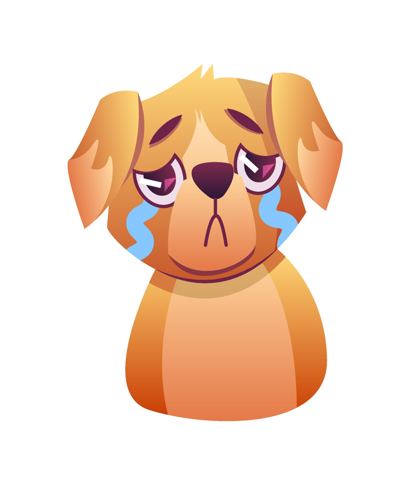

No se ha encontrado la página
Lamentamos que no haya funcionado la página.
Intentá contactarte con nosotros por nuestras redes sociales

¡Escribinos!
Lamentamos que no haya funcionado la página.
Intentá contactarte con nosotros por nuestras redes sociales
¡Escribinos!